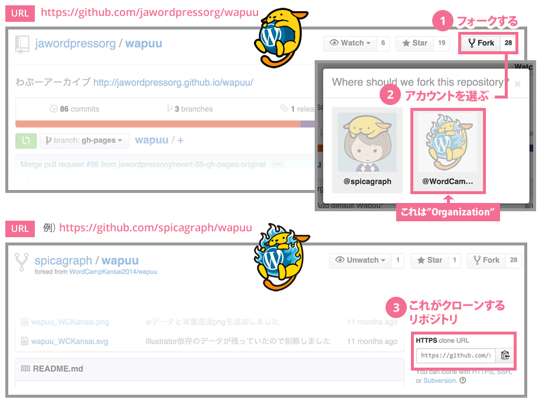
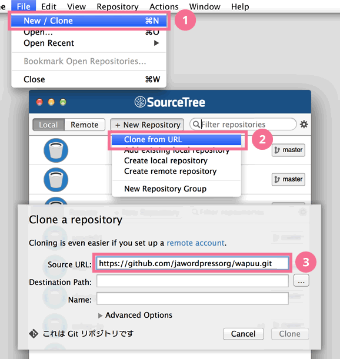
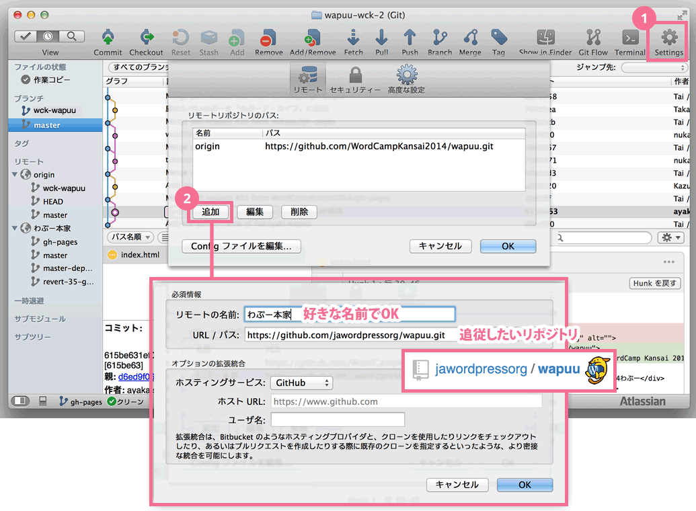
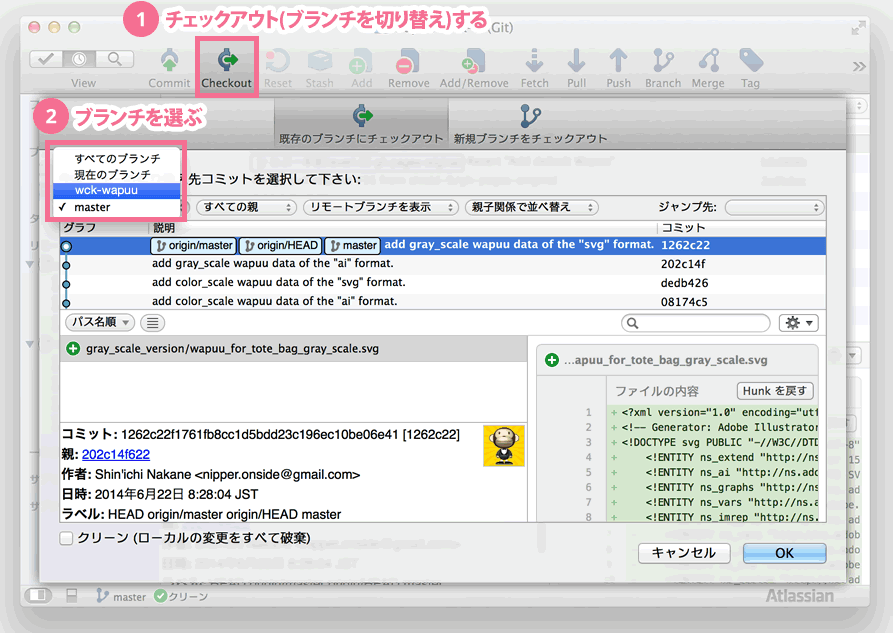
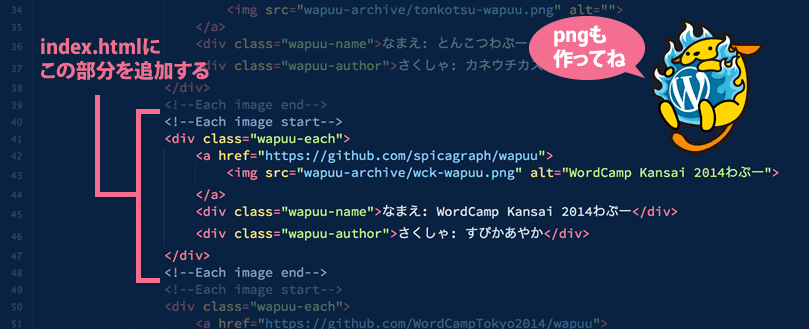
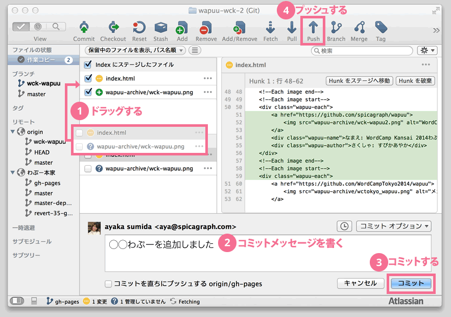

「わぷー」とは?
「わぷー (Wapuu)」は、ja.wordpress.org の公式キャラクターです。
わぷーの元画像ファイル
- SVG 形式ファイル: wapuu_original.svg
- (もしくはこのサイトの GitHub リポジトリにも含まれています)
- PNG 画像（338×372 px）
- ベクター形式 PDF ファイル
{kind=link}
{kind=link}
上記ファイルがカスタマイズしにくい場合は、最初のバージョンの画像ファイルを試すといいかもしれません。
わぷーアーカイブに追加する方法
- GitHubからプルリクエストを送る場合は以下の「GitHubからプルリクエストを送るには」を参考にしてください。
- プルリクエスト以外での追加ご希望の場合は、以下のフォーマットの画像を準備し、その旨とメッセージ内に「wapuu」と入れて、WordPress日本語フォーラムへお知らせください。
- ファイル形式: PNG
- 大きさと背景: 300x330px、背景透過
- ファイル名: 任意の半角英数字-wapuu.png (例: tonkotsu-wapuu.png)
GitHub からプルリクエストを送るには
コマンドラインで Git リポジトリを操作してプルリクエストを送る
- Github の「わぷー」のリポジトリをフォークします。すでにフォーク済み、clone 済みの場合は「3」へ。
- フォークした 自分の リポジトリをローカルに clone します
- 例: $ git clone git@github.com:tekapo/wapuu.git
- フォーク、clone 済みの場合は元のリポジトリに追従します
- gh-pages ブランチを checkout します。
- $ git checkout gh-pages
- わぷーアーカイブに追加するための画像を以下のフォーマットで作成し、wapuu-archive フォルダーに追加します。
- ファイル形式: PNG
- 大きさと背景: 300x330px、背景透過
- ファイル名: 任意の半角英数字-wapuu.png (例: tonkotsu-wapuu.png)
- index.htmlの一番最後の
<!--Each image end-->下に以下を追加します。<!--Each image start--> <div class="wapuu-each"> <a href="http://example.com"> <img src="wapuu-archive/XXXXXXX-wapuu.png" alt=""> </a> <div class="wapuu-name">なまえ: XXXXXXわぷー</div> <div class="wapuu-author">さくしゃ: XXXXXX</div> </div> <!--Each image end--> - commit、push します。
- 自分の Github ページからプルリクエストを送ります
SourceTreeを使ってプルリクエストを送る
- Github の「わぷー」のリポジトリをフォークします。すでにフォーク済み、clone 済みの場合は「3」へ。 
- フォークした 自分の リポジトリをローカルに clone します。 
- フォーク、clone 済みの場合は元のリポジトリに追従します。 
- 作業用ブランチ（ここではwck-wapuu）を checkout します。 
- わぷーアーカイブに追加するための画像を以下のフォーマットで作成し、wapuu-archive フォルダーに追加します。
- ファイル形式: PNG
- 大きさと背景: 300x330px、背景透過
- ファイル名: 任意の半角英数字-wapuu.png (例: tonkotsu-wapuu.png)
- index.htmlの一番最後の
<!--Each image end-->下に以下を追加します。
<!--Each image start--> <div class="wapuu-each"> <a href="http://example.com"> <img src="wapuu-archive/XXXXXXX-wapuu.png" alt=""> </a> <div class="wapuu-name">なまえ: XXXXXXわぷー</div> <div class="wapuu-author">さくしゃ: XXXXXX</div> </div> <!--Each image end--> - ステージして、コミットして、プッシュします。 
- 自分の Github ページにアクセスして「プルリクエスト」ボタンからプルリクエストを送ります。
ライセンス
WordPress ソフトウェアと同じく GPL バージョン 2 またはそれ以降の互換ライセンスとなり、プラグインやテーマ内での使用も可能です。
ただし、著作権はキャラクター作成者のカネウチカズコさんが保有します。